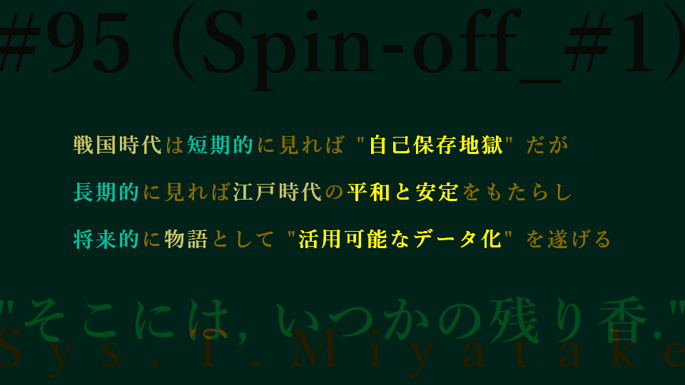

[with audio] #95
【音声配信】戦国時代は黒歴史？【スピンオフ・第1弾】

サブテーマ： 黒歴史を焼却せず活用する，科学的思考と健康との関係，情報伝達やアドバイスの困難性とエゴの働き，可謬主義（↓ノート），プラグマティズム（↓ノート）
再生時間： 約 35 分
メインテーマは「上手に伝えることは非常に難しい」ですが，それにまつわるいくつかのサブテーマが展開されます！また，本ページ下部にある考察・補足ノートでは，メインテーマとは異なりますが，哲学的アプローチ「可謬主義」や「プラグマティズム」の説明をまとめ，筆者の瑣末な論考を少々展開しています．
今回の内容をリストにしてみました！
内容リストを表示・非表示
【スピンオフ・第1弾 の主な内容】
- お茶漬けっていいな
- 戦国時代は短期的に見れば "自己保存地獄" だが長期的に見れば江戸時代の平和と安定をもたらし将来的に物語として "活用可能なデータ化" を遂げる
- 犬の鳴き声が幽かに聴こえる
- 科学実験の「条件を揃える」ことと日常の「コスパ志向」との関連性
- 深呼吸の尊重（緊張を解しリフレッシュするのであります）
それでは，お楽しみください！
ファイル:
"【音声配信】上手に伝えることは非常に難しい【スピンオフ・第1弾】 - Sys. T. Miyatake (Dec 09, 2024)" Talk Audio
ファイル及びデータについての詳細表示
ファイルに関する説明とお願い:
Google LLC https://www.google.com/ のクラウドストレージサービス，Google Drive に保存されているファイルを参照しています．
サイトにお越しの皆さまに鑑賞いただくことを目的として，誰でも再生可能な状態に設定してあります．
当サイト利用者さまがオンラインサーバ上でファイルを再生してお楽しみいただく以外の，たとえばローカルへの保存などの行為はお控えくださいますよう，お願い申し上げます．
ドライブにアップロードする理由:
ファイルサイズが大きいため．
考察・補足ノート
[以下，AIに参加してもらい共同執筆しました．]
今回のノート内容へのAI関与情報を表示
複数の他の文献やウェブ上の資料などの情報と共に，情報源のひとつとして参考にさせていただきました．なお，情報の正確性・信憑性や最新かどうか等は保証致しかねますが，適宜内容の確認や必要な調査を行い，それらの品質向上に努めております．
可謬主義（ファリビリズム）とプラグマティズム
認識論の説明の難しさに触れる中で登場した概念の名称ですが，（せっかくですので筆者の復習がてら，）ここに内容を大雑把にまとめてみます．
可謬主義（ファリビリズム）は哲学用語です．いかなる信念も最終的に「合理的な支持・正当化をすることはできない」という立場です．専門的で科学的な考え方から，一般的で常識的なテーマまで，あらゆる信念に適用できるアプローチだと思います．
可謬論に立つ場合，知識や正当な信念の存在について「懐疑的にではなく」，あらゆる知識は基本的に「決して確実な正当化に基づいていない」と信じて考えるのです．同時にそれは探求者として「人間の認知上の欠陥を寛容する」ことも意味するので，生産的で建設的な問題解決をするにあたって「懐疑主義」の問題点を改善できるはず！と筆者は少しうれしそうです．笑
これまで懐疑主義に偏っていた筆者自身の問題解決にもつながってきますし，それは「知識獲得の限界を単に諦めるのではなく，実用的な視点で評価し活用する」という前向きなプロセスを踏んでいけるような体感を得ております．
こうしたことからも，可謬主義というのは，以下の「プラグマティズム」と関連性が高い思想だと考えていきます．
プラグマティズムとは（＋筆者の論考）
プラグマティズム（Pragmatism）は，19世紀末に発展した哲学運動で，「実用性」や「具体的な成果」を「知識や信念の正当性の基準とする思想」のことです．
その核心は「真理や意味は実生活の中での実用性や効果によって定義される」という考え方にあります．
たとえば真理は神様のような絶対的な存在にあるとは限らず（あるいはそれを否定し），状況に応じて変更されるべき（実用性や実際に有用であった結果を評価し，正当な真理や知識であると見做すべき）とする立場ですね．
つまり固定的なものではなく，適宜修正されるべきである... ということは，たとえば神様のような絶対的な存在に頼らず，その都度最適な手順や方法を選び，それこそが真理であると言い切ってよいと考えているのですね．
筆者もこの立場にあると思っていて，知識もそうで，実際に科学自体が「修正されながら発展した」という進歩の歴史が間違いなくあるわけだし，この「修正可能な領域がまだまだあるぞ」というところを潔く認めることができるかどうかは重要だと思うんですよね．
また，たとえばカール・ポパーの「反証可能性」のように，「科学的・理論的な命題は "間違っている可能性がある" からこそ意味を持つ」と考えることも重要です．完全な絶対化は常に不可能であるとし，予言や啓示・神的なものへの絶対視は科学的理念に反します．
もし，これまでの宗教や純粋な理論が「実用性を持たなくなってきた」という流れがあるならば，「自然に真理から離れていくような見え方をする」ことがあるんですよね．
また，それ自体（信仰や理論）が個々人の生活においてポジティブな効果をもたらすならば，それはやはり実用的であるし真理であるといえるだけの正当性があると考えることができると思うんですね．
さらに，その信念や知識の実用性も流れと共に変わってくる．そうした中で絶対的な「真理（とされるもの）に執着する」よりは，実用的で有用な「その都度の最適な知識や信念」を「真理として扱う（必要に応じて変更し続ける）」ことは，健康的で，自然で，無理のない，柔軟な選択であるように思います．
主要なプラグマティスト 3 名のご紹介（敬称略）
■ C.S.パース
プラグマティズムの創始者:「プラグマティック原理」を提唱．
原理の概念（単純化）: 「真理の正当性は，我々の行動や経験においてもたらす結果によって決まる」とした．
■ ウィリアム・ジェームズ
プラグマティズムの普及に貢献:「真理とは信念が実用的であること」と強調．
宗教や倫理等に応用: プラグマティズムのアプローチを広く適用し「その信念が個人の生活にポジティブな効果をもたらす場合，それは真理とみなせる」とした．
■ ジョン・デューイ
プラグマティズムを教育や社会改革に応用: 知識や信念は「解決すべき問題への応答」として進化するものであり，民主主義社会における教育の重要性を強調．
[以上]
フィードバックご送信お待ちしております
今回の内容に関する貴重なご意見・ご感想をお聴かせくださると，とても助かります...！ご協力いただける方は是非 筆者宛にご連絡 お願いいたします...！
以上になります．今回もご清聴ありがとうございました！
[ Sys. T. Miyatake, (Dec 09, 2024. Last modified: May 16, 2025.;) ]